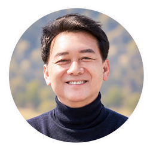
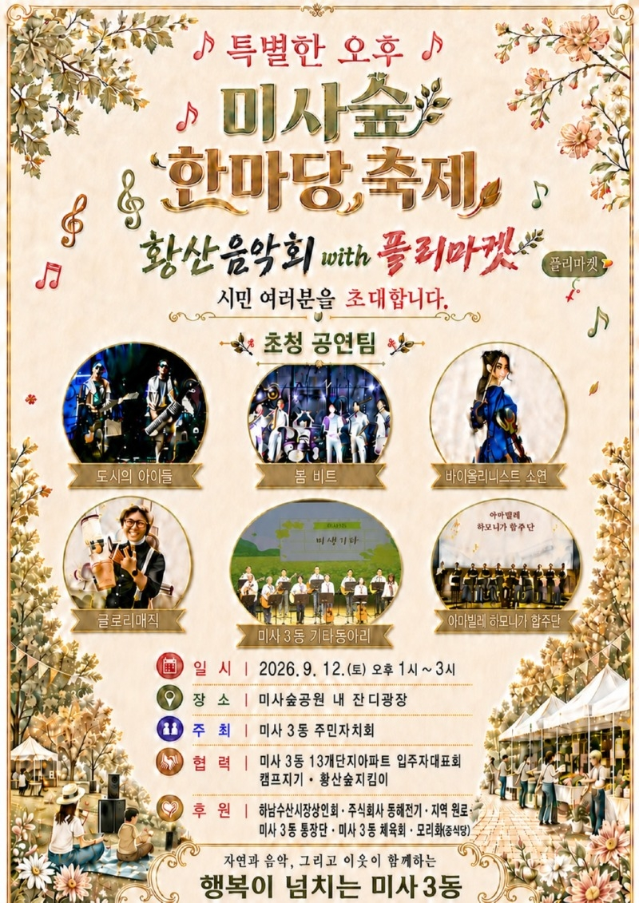
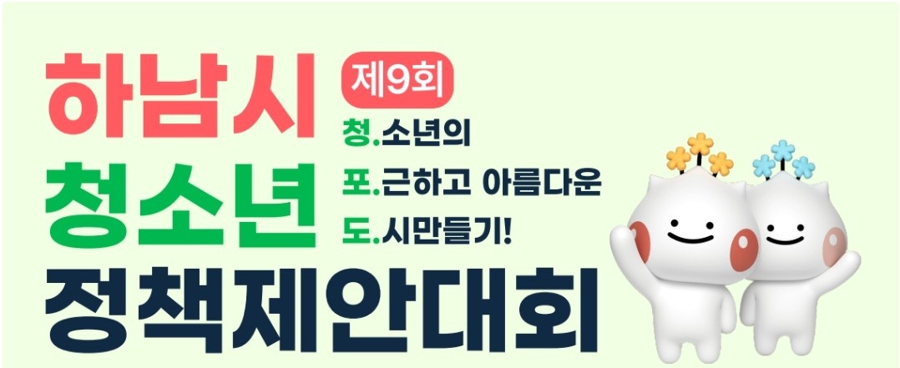
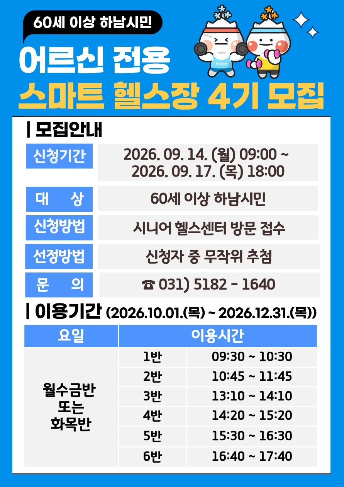

📌 이번 호 주요 목차

우리동네 국회의원 이광재📰 언론보도
추미애경기도지사, 이광재 예결위원장 만나 2천446억 국비 요청
경기도가 국회 예산결산특별위원회 이광재 위원장을 만나 내년도 도내 10개 핵심 사업에 대한 총 2천446억 원 규모의 국비 지원을 요청하고 적극적인 협조를 당부했습니다.
📌 출처: 연합뉴스 (최찬흥 기자)
📰 언론보도
이광재 “용혜인 후보자는 국민 눈높이 안맞아… 李정부에 부담돼선 안 돼”
이광재 국회 예산결산특별위원장은 인터뷰에서 개각 및 장관 후보자 검증에 대해 국민 눈높이에 맞는 국정 운영과 정부 부담 최소화의 중요성을 강조했습니다.
📌 출처: 디지털타임스 (강현철 기자)
📝 현장일지
[호르무즈에서 북극항로까지, 대한민국의 신질서 국가전략은?]
외교·통일·안보 분야 대정부질문에서 호르무즈 해협부터 북극항로 개척까지 대한민국의 글로벌 신질서 대응 및 국가 안보·경제 전략 구상을 발표했습니다.
📌 출처: 이광재 공식 네이버 블로그
🎥 현장일지 (영상)
"한국 드론이 뒤쳐지는 이유?" 대정부질문 현장 숏폼
외교·통일·안보 분야 대정부질문에서 대한민국 드론 산업의 규제와 현실, 글로벌 기술 경쟁력 강화를 위한 현장 발언 숏폼 영상입니다.
📌 출처: 이광재 공식 유튜브 (이광재 TV)
📰 하남 지역 주요 뉴스
📰 재정/기획
경기도 긴축재정에 하남시 예산도 '노란불'…2027년 예산 효율성 확보 비상
경기도의 긴축재정 기조 본격화로 하남시의 2027년 예산 편성에도 경고등이 켜진 가운데, 세입 불확실성과 경직성 지출 증가에 대응해 한정된 재원의 효율적 배분 및 사업 우선순위 재조정 방안이 긴급 과제로 떠올랐습니다.
📌 출처: 뉴스프리존 (김정수 기자)
📰 의정/행정
오지연 하남시의원 "농어촌공사 토지 소송 10억 혈세 부담… 시 행정 개선 필요"
하남시의회 오지연 의원(국민의힘)이 5분 자유발언을 통해 한국농어촌공사 토지 소송으로 인한 10억 원 상당의 혈세 부담 문제를 지적하며 시 집행부의 진정성 있는 반성과 철저한 행정 개선 대책 마련을 강력히 요구했습니다.
📌 출처: 뉴스프리존 (김정수 기자)
📰 보건/복지
하남시, 의사가 경로당 직접 찾아 어르신 맞춤 건강상담 호응
하남시가 공중보건의와 전문 간호사가 경로당을 직접 방문해 혈압·혈당 측정, 만성질환 복약 지도 및 1대1 건강 궁금증을 선제적으로 해결해 주는 이동 건강 관리 서비스를 추진해 어르신들의 호응을 얻고 있습니다.
📌 출처: 매일일보 (나헌영 기자)
📰 의정/소방
강성삼 경기도의원, '경기도 의용소방대 활성화 정책연구' 본격 추진
강성삼 경기도의원(더불어민주당, 하남)이 의용소방대의 고령화 및 인력 감소 문제를 진단하고 31개 시·군 특성에 맞는 실질적 지원 기준과 조례·예산 반영 방안을 마련하기 위해 '경기도 의용소방대 활성화 정책연구'를 본격 착수했습니다.
📌 출처: 서울신문 (양승현 리포터)
💬 하남 맘카페 HOT 이슈
2026년 9월 11일 기준 하남 지역 인터넷 커뮤니티(맘카페)에서 가장 조회수와 댓글이 높았던 핫이슈 TOP 3 소식입니다.
1️⃣ '미사·감일 3·9호선 연장선' 세부 승인 속도 및 착공 가시화 소식에 맘카페 열띤 호응
현황: 하남 미사강변도시 및 감일지구를 경유하는 지하철 3호선·9호선 연장 사업의 세부 절차가 순조롭게 추진되며 2026년 하반기 착공 준비가 가시화되고 있다는 소식이 전해졌습니다.
💡 주민 포인트: 강남·여의도 직주근접 출퇴근 환경 대폭 개선 및 미사·감일 학부모 교통 복지·지역 가치 상승 기대.
💬 주민 반응: "3호선과 9호선 착공 소식만 기다리고 있었는데 드디어!", "아이들 서울 학원가 이동이랑 주말 이동이 훨씬 편해지겠네요" 미사·감일 맘카페 환호.
2️⃣ 하남 미사 한강공원 가을맞이 어린이 생태체험 및 힐링 주말 프로그램 신청 개시
현황: 미사 한강공원에서 가을철을 맞아 어린이와 학부모가 함께 참여하는 숲 체험, 야생화 관찰 및 주말 생태 교육 프로그램 선착순 접수가 시작되었습니다.
💡 주민 포인트: 주말 아이들과 함께 멀리 나가지 않고 자연 속에서 즐기는 무료 생태체험활동.
💬 주민 반응: "주말에 아이들과 갈 만한 알찬 프로그램이 생겼네요!", "선착순 접수 바로 신청했습니다" 학부모 높은 관심.
3️⃣ '2026 하남 이성산성 문화제' 어린이 역사체험·가족 버스투어 사전예약에 학부모 관심 폭발
현황: 오는 9월 19일 개막하는 '2026 하남 이성산성 문화제'의 하남여행버스 및 어린이 유적 체험 프로그램 사전 접수가 오픈되었다는 소식이 전해졌습니다.
💡 주민 포인트: 가을 주말 가족 단위 역사 문화 체험 및 하남 이성산성 야외 버스투어 선착순 참여 가능.
💬 주민 반응: "작년에도 광속 마감이었는데 올해는 꼭 예약 성공하고 싶네요!", "아이와 가을 주말 나들이 가기 딱 좋은 축제" 맘카페 기대 만발.
🎭 ALL IN 하남라이프
2026년 9월 11일 기준 한눈에 보는 하남시 최신 문화·행사·축제 가이드
🎪 2026.09.12(토) | 축제/행사
특별한 오후 《미사숲한마당축제 & 황산음악회 with 플리마켓》 시민 여러분을 초대합니다
"미사숲공원에서 펼쳐지는 특별한 오후! 미사숲한마당축제 & 황산음악회 with 플리마켓"
미사3동 주민자치회에서 마련한 이번 축제는 아름다운 음악 공연과 다채로운 플리마켓, 즐거운 체험이 어우러지는 하남 시민 초청 행사입니다. 미사숲공원 잔디광장에서 가족, 이웃과 함께 풍성하고 즐거운 주말 오후를 즐기세요.
📅 일시: 2026년 9월 12일(토) 오후 1시 ~ 3시
📍 장소: 미사숲공원 내 잔디광장
🏛️ 주최: 미사3동 주민자치회
미사3동 주민자치회에서 마련한 이번 축제는 아름다운 음악 공연과 다채로운 플리마켓, 즐거운 체험이 어우러지는 하남 시민 초청 행사입니다. 미사숲공원 잔디광장에서 가족, 이웃과 함께 풍성하고 즐거운 주말 오후를 즐기세요.
📅 일시: 2026년 9월 12일(토) 오후 1시 ~ 3시
📍 장소: 미사숲공원 내 잔디광장
🏛️ 주최: 미사3동 주민자치회

📌 출처: 미사3동 주민자치회
🔍 2026.09.11~ | 교육/체험
2026 경기도자박물관 [생생 국가유산 교육] 『탐정 수첩 : 도자기 속 단서들』 참여 가족 모집 (무료)
"우리 가족이 탐정이 되어 도자기 속 숨겨진 단서를 밝혀라!"
경기도자박물관에서 초등 자녀를 둔 가족을 대상으로 생생 국가유산 교육 프로그램 『탐정 수첩 : 도자기 속 단서들』 참가 가족을 모집합니다. 가족이 함께 미션을 해결하며 역사와 도자 문화를 생생하게 체험할 수 있습니다.
📅 운영기간: 2026년 10월 10일(토) ~ 10월 25일(일) (주말 총 6회)
📝 모집기간: 2026년 9월 11일(금) 10:00 ~ 선착순 마감 (무료)
👨👩👧👦 대상: 초등 자녀를 둔 3~5인 가족 (회당 10가족)
📍 장소: 분원백자자료관, 팔당전망대, 경기도자박물관 등
경기도자박물관에서 초등 자녀를 둔 가족을 대상으로 생생 국가유산 교육 프로그램 『탐정 수첩 : 도자기 속 단서들』 참가 가족을 모집합니다. 가족이 함께 미션을 해결하며 역사와 도자 문화를 생생하게 체험할 수 있습니다.
📅 운영기간: 2026년 10월 10일(토) ~ 10월 25일(일) (주말 총 6회)
📝 모집기간: 2026년 9월 11일(금) 10:00 ~ 선착순 마감 (무료)
👨👩👧👦 대상: 초등 자녀를 둔 3~5인 가족 (회당 10가족)
📍 장소: 분원백자자료관, 팔당전망대, 경기도자박물관 등
📌 출처: 한국도자재단 / 경기도자박물관
🎨 2026.09~ | 비엔날레/워크숍
2026 경기도자비엔날레 국제도자워크숍 국내·외 작가와 함께하는 참여형 프로그램 사전접수 안내
"국내·외 세계적인 도예 작가와 함께하는 특별한 도자 체험 워크숍!"
2026 경기도자비엔날레 행사 일환으로 국내외 도예 작가들과 일반 시민이 직접 참여하여 자유롭게 도자 작품을 창작하고 시연을 관람하는 국제도자워크숍 참가 사전접수를 진행합니다.
💡 주요 내용: 국내외 아티스트 창작 시연, 아티스트 토크, 시민 참여형 체험 워크숍
📍 신청: 경기도자비엔날레 / 한국도자재단 홈페이지 사전접수
2026 경기도자비엔날레 행사 일환으로 국내외 도예 작가들과 일반 시민이 직접 참여하여 자유롭게 도자 작품을 창작하고 시연을 관람하는 국제도자워크숍 참가 사전접수를 진행합니다.
💡 주요 내용: 국내외 아티스트 창작 시연, 아티스트 토크, 시민 참여형 체험 워크숍
📍 신청: 경기도자비엔날레 / 한국도자재단 홈페이지 사전접수
📌 출처: 한국도자재단 / 경기도자비엔날레
🍇 2026.09.01~09.13 | 청소년/공모
제9회 하남시 청소년정책제안대회 《청.포.도.》 참가자 및 청중평가단 모집
"청소년의 포근하고 아름다운 도시 만들기, 청·포·도!"
하남시 청소년들이 일상과 지역사회에서 느낀 문제를 직접 발견하고 더 나은 하남을 위한 정책 아이디어를 제안하는 대회입니다. 정책제안 참가자와 본선 청중평가단을 함께 모집합니다.
👨👩👧👦 대상: 하남시 거주·재학 9세(초3)~24세 청소년
📝 접수기간: ~ 2026년 9월 13일(일)까지 (제안자) / ~ 10월 17일(토) (청중평가단)
📅 본선일시: 2026년 10월 24일(토) 14:00 | 하남시청소년수련관
하남시 청소년들이 일상과 지역사회에서 느낀 문제를 직접 발견하고 더 나은 하남을 위한 정책 아이디어를 제안하는 대회입니다. 정책제안 참가자와 본선 청중평가단을 함께 모집합니다.
👨👩👧👦 대상: 하남시 거주·재학 9세(초3)~24세 청소년
📝 접수기간: ~ 2026년 9월 13일(일)까지 (제안자) / ~ 10월 17일(토) (청중평가단)
📅 본선일시: 2026년 10월 24일(토) 14:00 | 하남시청소년수련관

📌 출처: 하남시청소년수련관
🏥 2026.09.14~09.17 | 건강/어르신
2026년 하남시 시니어 헬스센터 《어르신 전용 스마트 헬스장》 4기 참가자 모집
"최신 스마트 운동기구로 안전하고 효과적인 근감소증 예방!"
하남시보건소에서 60세 이상 어르신을 위한 맞춤형 스마트 헬스장(4기) 참가자를 모집합니다. 전자동 근력운동기 및 전신교차 진동운동기 등 개인별 운동부하 설정으로 안전하고 효과적인 순환운동 프로그램을 제공합니다.
👴 대상: 60세 이상 하남시민 (무작위 추첨)
📝 접수기간: 2026년 9월 14일(월) 09:00 ~ 9월 17일(목) 18:00 (방문접수)
📍 접수장소: 덕풍스포츠문화센터 2층 시니어 헬스센터 (역말로 71)
📅 이용기간: 2026년 10월 1일 ~ 12월 31일 (☎ 031-5182-1640)
하남시보건소에서 60세 이상 어르신을 위한 맞춤형 스마트 헬스장(4기) 참가자를 모집합니다. 전자동 근력운동기 및 전신교차 진동운동기 등 개인별 운동부하 설정으로 안전하고 효과적인 순환운동 프로그램을 제공합니다.
👴 대상: 60세 이상 하남시민 (무작위 추첨)
📝 접수기간: 2026년 9월 14일(월) 09:00 ~ 9월 17일(목) 18:00 (방문접수)
📍 접수장소: 덕풍스포츠문화센터 2층 시니어 헬스센터 (역말로 71)
📅 이용기간: 2026년 10월 1일 ~ 12월 31일 (☎ 031-5182-1640)

📌 출처: 하남시보건소 건강증진과
🏛️ 공공기관 소식지
2026년 9월 11일 기준 하남시청 및 공공기관의 주요 복지·행정 지원사업 안내입니다.
🏛️ 하남시청 | 2026.09~
2026년 하남시 『청년월세 한시 특별지원』 2차 신청 안내
하남시에서 청년층의 주거비 부담을 경감하고 안정적인 자립 기반 조성을 위해 『청년월세 한시 특별지원 사업』을 지속 시행합니다.
지원 대상: 하남시 거주 만 19세~34세 무주택 청년 (부모와 별도 거주, 청년가구 중위소득 60% 이하)
지원 내용: 실제 납부 임차료 범위 내 월 최대 20만 원씩 12개월간(최대 240만 원) 매월 생애 1회 지원
신청 방법: 복지로(bokjiro.go.kr) 온라인 신청 또는 주소지 관할 동 행정복지센터 방문 신청
문의:
— 하남시청 청년아동복지과: 031-790-5248
— 국토교통부 콜센터: 1600-0777
지원 대상: 하남시 거주 만 19세~34세 무주택 청년 (부모와 별도 거주, 청년가구 중위소득 60% 이하)
지원 내용: 실제 납부 임차료 범위 내 월 최대 20만 원씩 12개월간(최대 240만 원) 매월 생애 1회 지원
신청 방법: 복지로(bokjiro.go.kr) 온라인 신청 또는 주소지 관할 동 행정복지센터 방문 신청
문의:
— 하남시청 청년아동복지과: 031-790-5248
— 국토교통부 콜센터: 1600-0777
📌 출처: 하남시청 청년아동복지과 / 국토교통부
💉 하남시 보건소 | 2026.09.20~
2026년 가을철 어르신·어린이 독감(인플루엔자) 무료 예방접종 안내
하남시 보건소에서 가을·겨울철 인플루엔자 유행에 대비해 관내 어르신, 어린이, 임신부 및 취약계층 시민을 대상으로 독감 무료 예방접종을 적극 추진합니다.
접종 대상: 하남시 거주 만 65세 이상 어르신(1961년 이전 출생자), 만 12세 이하 어린이, 임신부
접종 기간: 2026년 9월 20일(일) ~ 2027년 4월 30일(금) (대상자별 순차적 진행)
접종 장소: 하남시 관내 지정 위탁의료기관 및 하남시 보건소/미사보건센터
준비물: 신분증 및 주민등록등본 (어린이는 아기수첩 지참)
문의:
— 하남시 보건소 감염병관리팀: 031-790-6554
— 질병관리청 콜센터: 1339
접종 대상: 하남시 거주 만 65세 이상 어르신(1961년 이전 출생자), 만 12세 이하 어린이, 임신부
접종 기간: 2026년 9월 20일(일) ~ 2027년 4월 30일(금) (대상자별 순차적 진행)
접종 장소: 하남시 관내 지정 위탁의료기관 및 하남시 보건소/미사보건센터
준비물: 신분증 및 주민등록등본 (어린이는 아기수첩 지참)
문의:
— 하남시 보건소 감염병관리팀: 031-790-6554
— 질병관리청 콜센터: 1339
📌 출처: 하남시 보건소 / 질병관리청
© 2026 우리동네 진짜일꾼 이광재